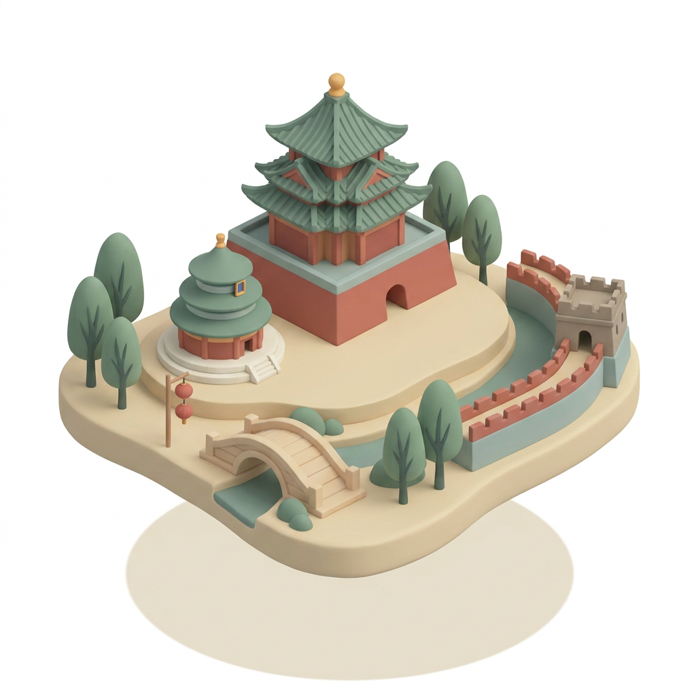
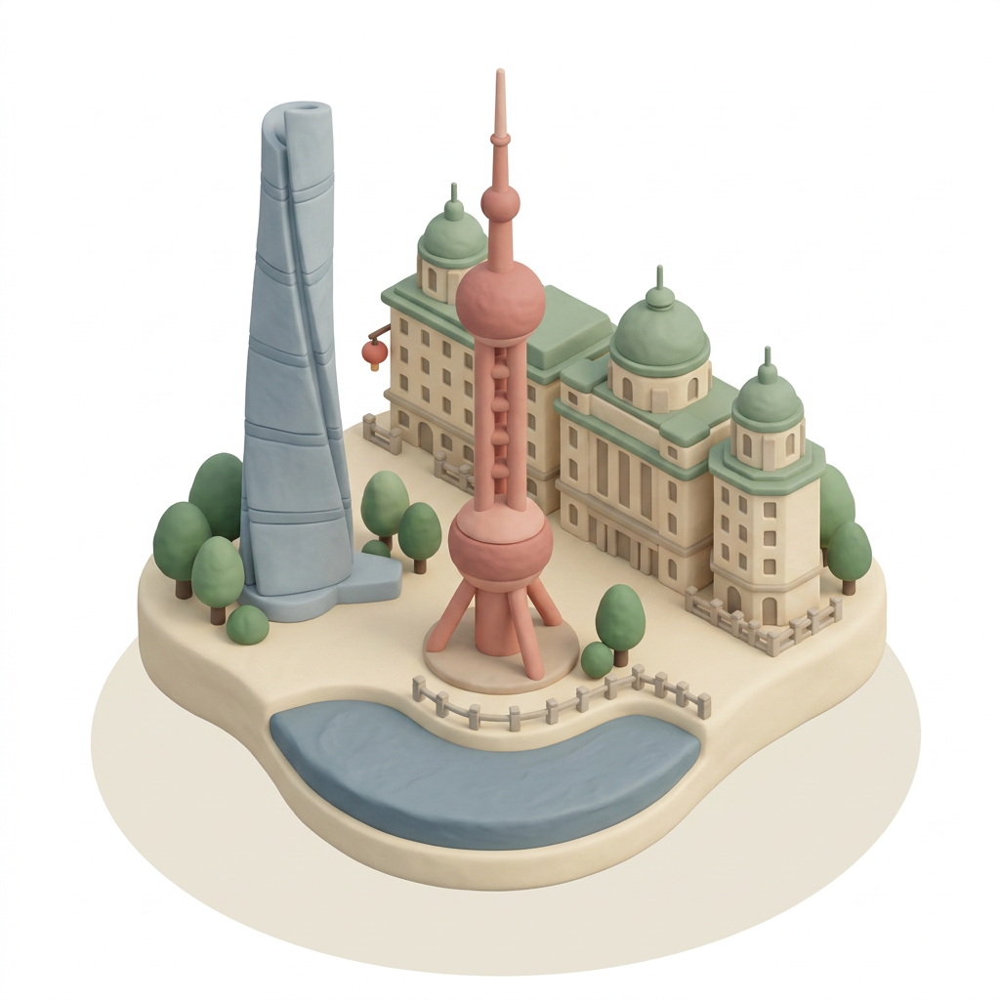
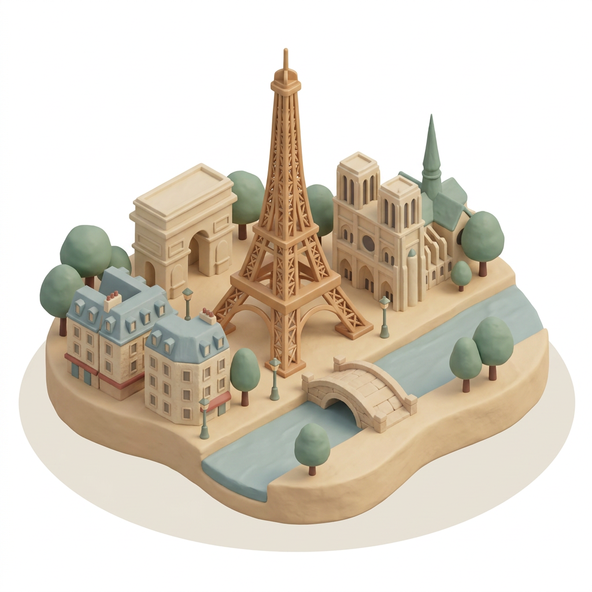
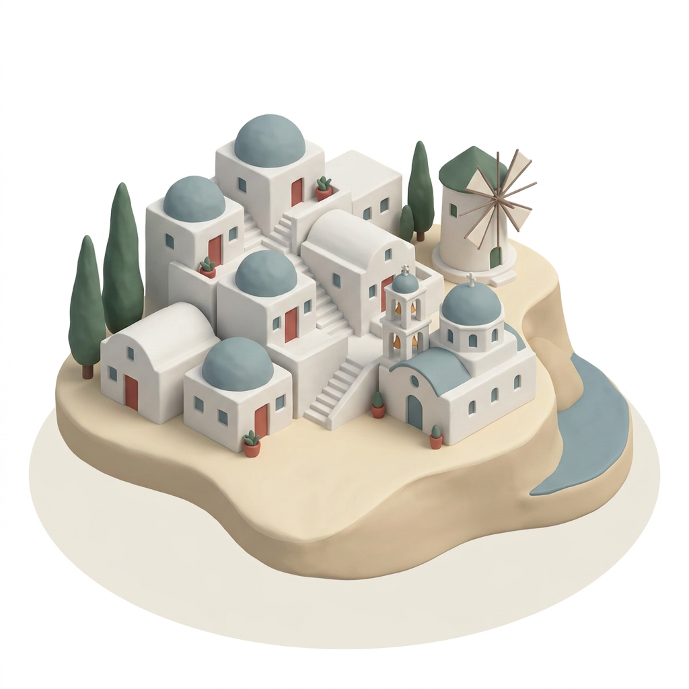
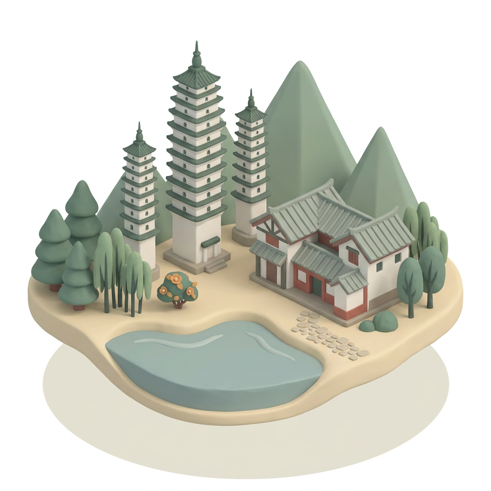

🐾 PAWTI · CITY THUMBNAIL · BATCH 01
城市缩略图素材 · 第 1 批
柔和 3D 黏土轴测小岛风格 · 已对齐参考图风格 · 可直接抠图
🎨 风格参考（用户提供的 5 张原图）


📌 风格关键词
📐 视角：45° 等距轴测 · 浮空有机小岛
🎨 渲染：柔和 3D 黏土质感 · 微哑光 · AO 阴影
🌈 色调：暖灰低饱和 · 鼠尾草绿主导 · 朱红/雾蓝点缀
🖼️ 背景：纯白 · 易抠图 · 小岛下淡阴影
#7E9B8C 鼠尾草绿
#E8D9B8 米杏
#C97060 哑朱红
#A8C0BC 雾蓝灰
#D49870 蜜橙
🐾 第 1 批 · 5 个城市素材

北京
BEIJING故宫角楼 · 天坛 · 长城 · 红灯笼

上海
SHANGHAI东方明珠 · 外滩 · 上海中心

巴黎
PARIS埃菲尔铁塔 · 凯旋门 · 圣母院

圣托里尼
SANTORINI蓝顶白屋 · 风车 · 爱琴海岛崖

大理
DALI三塔 · 白族民居 · 洱海 · 苍山
🐾
第 2 批预备
东京 · 京都 · 成都
重庆 · 西安
✅ 请帮我检查 5 个对齐点
- 1. 渲染质感 — 是否都是柔和 3D 黏土感（不是扁平矢量、不是水彩）？
- 2. 色调一致 — 是否都偏暖灰低饱和（鼠尾草绿主导）？
- 3. 地标识别度 — 一眼能不能认出是哪个城市？
- 4. 背景纯净 — 是否纯白可直接抠图？
- 5. 构图一致 — 是否都是浮空小岛 + 居中地标？
通过 → 我直接开第 2 批 / 有偏差 → 告诉我具体哪张哪里需要重做